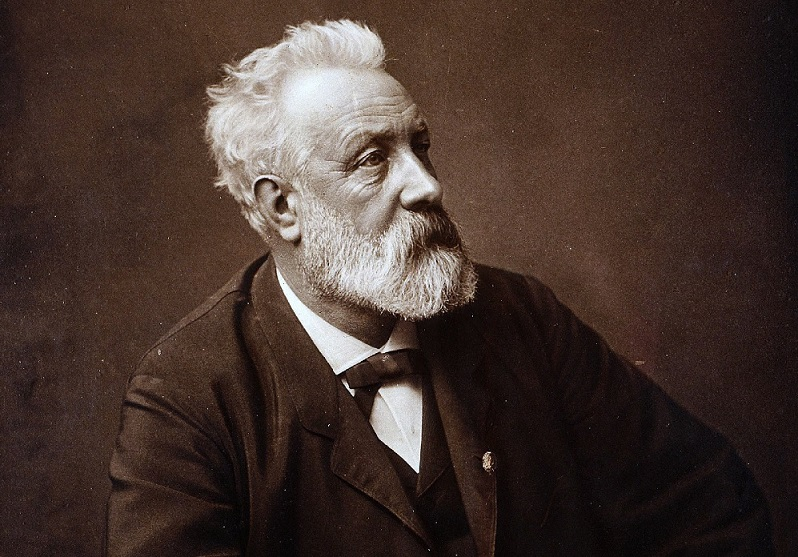

Julio Verne
¡Bienvenidos a nuestra página web dedicada a Julio Verne! En esta página, encontrarás una gran cantidad de información sobre el famoso escritor francés, conocido por sus fascinantes novelas de aventuras y ciencia ficción. Aquí podrás descubrir más sobre su vida, su obra y su legado. Además, en nuestra biblioteca virtual encontrarás una amplia selección de las obras más destacadas de Verne, disponibles para descargar y disfrutar en tu dispositivo electrónico. Desde "Viaje al centro de la Tierra" hasta "Veinte mil leguas de viaje submarino", podrás sumergirte en el mundo de la imaginación y la aventura que caracteriza la obra de este autor. También encontrarás reseñas de libros, artículos interesantes y noticias relacionadas con Julio Verne y su influencia en la cultura popular. ¡No te pierdas la oportunidad de explorar el fascinante mundo de Julio Verne en nuestra página web estilo biblioteca!
¿Quien fue Julio Verne?
Julio Verne (1828-1905) fue un escritor francés conocido por sus novelas de aventuras y ciencia ficción, que han sido muy influyentes en la literatura y la cultura popular. Nació en la ciudad de Nantes, Francia, y desde joven mostró un gran interés por la literatura y la ciencia. Verne es conocido por sus historias sobre viajes extraordinarios y aventuras en lugares exóticos, que a menudo incluían elementos de ciencia ficción y tecnología. Entre sus obras más famosas se encuentran "Viaje al centro de la Tierra", "De la Tierra a la Luna", "Veinte mil leguas de viaje submarino" y "La isla misteriosa", entre muchas otras. Las historias de Verne han sido adaptadas a numerosas películas, series de televisión, cómics y videojuegos, y su influencia se extiende más allá de la literatura, llegando a la ciencia, la tecnología y la cultura popular en general. En resumen, Julio Verne fue un escritor visionario que dejó un legado duradero en la literatura y el imaginario colectivo.
Titulos más famosos de Verne
"Viaje al centro de la Tierra": publicada en 1864, esta novela cuenta la historia del profesor Lidenbrock y su sobrino Axel, quienes descubren un antiguo manuscrito que los lleva a emprender un peligroso viaje al centro de la Tierra. Durante su aventura, descubren mundos subterráneos llenos de criaturas extrañas y peligrosas.
"De la Tierra a la Luna": publicada en 1865, esta novela cuenta la historia de un grupo de hombres que construyen un enorme cañón y utilizan la fuerza de la pólvora para lanzar una nave espacial hacia la Luna. La novela explora temas como la exploración espacial, la ciencia y la tecnología.
"Veinte mil leguas de viaje submarino": publicada en 1870, esta novela cuenta la historia del Capitán Nemo y su submarino Nautilus, que recorre los océanos del mundo en una misión desconocida. La novela explora temas como la exploración submarina, la tecnología y la naturaleza humana.
"La isla misteriosa": publicada en 1874, esta novela cuenta la historia de un grupo de náufragos que quedan varados en una isla desconocida. A medida que tratan de sobrevivir en la isla, descubren que está llena de peligros y misterios. La novela explora temas como la supervivencia, la ciencia y la tecnología.
Estas son solo algunas de las obras más famosas de Julio Verne, pero su legado literario es mucho más amplio y diverso. Sus historias han inspirado a generaciones de lectores y han dejado una huella duradera en la literatura y la cultura popular.